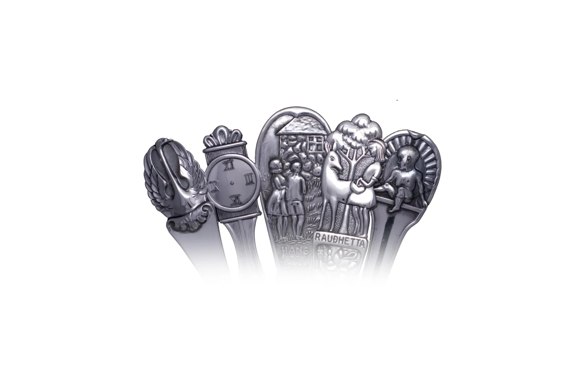

Fyrsta silfrið
Barnaskeiðin
Frá 1936 hafa silfursmiðir ERNU handsmíðað íslenskar barnaskeiðar úr silfri. Fimm myndefni ganga enn: Klukkuskeiðin, Barnið, Svanur, Rauðhetta og Hans og Gréta.
39.500 kr.Eldri borgarar fá 10% afslátt og 30% af áletrun.